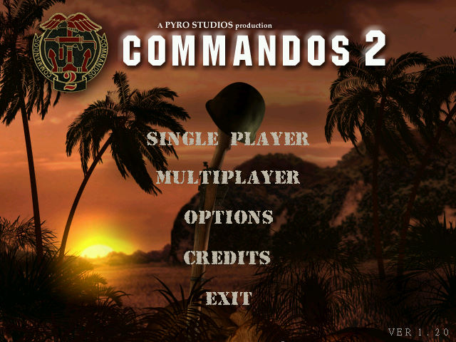
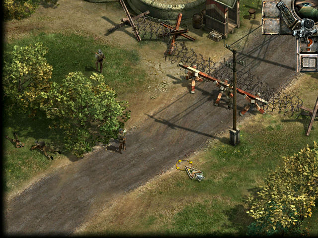

名稱：魔鬼戰將2／盟軍敢死隊2：勇者無敵 (Commandos 2: Men of Courage，中文／英文版)
簡介：Pyro 2001年出品的即時動作戰術遊戲，由Eidos代理發行，台灣由第三波中文化並代
理發行。2020年經由Steam推出「HD重製版（HD Remaster）」 [待補]。


保護：光碟SafeDisc 2.30
備註：繁中版為1.20版
檔案：nocd.rar = 1.20光碟檔（中英文通用）
cmdos2-Steam-1.12.010.rar = Steam HD重製版1.12.010版